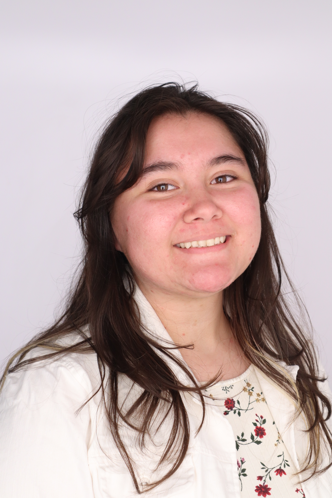

I am Victoria Treviño, working on a double major in BA Computer Science and Studio Art at New Mexico State University. My primary focus in Computer Science languages are Java, Python, and Godot Language. My specification in Studio Art is Ceramics and Painting. My hobbies include different mediums of art including ceramics, painting, crochet, beadwork, emboriery and more as well as working on games in both visual and coding portions.